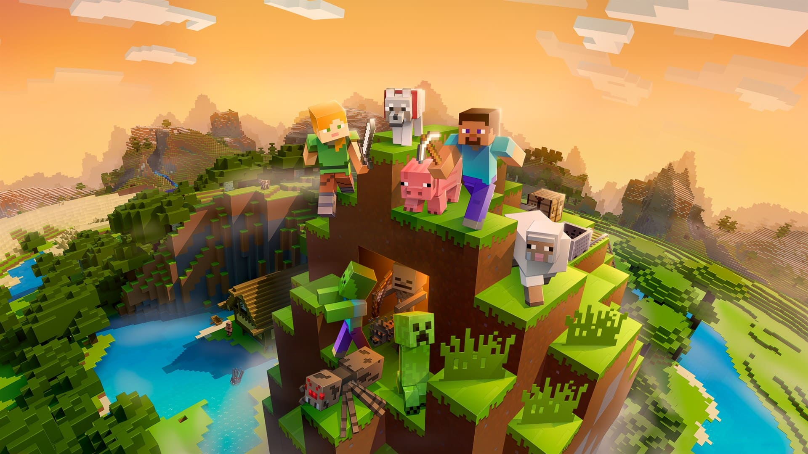
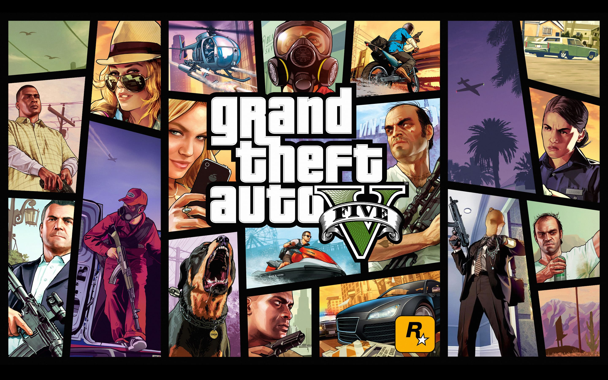
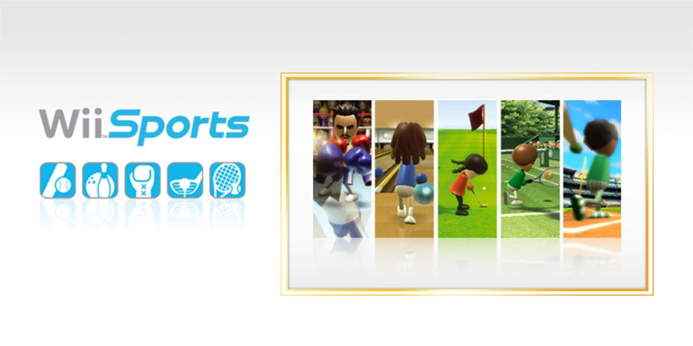
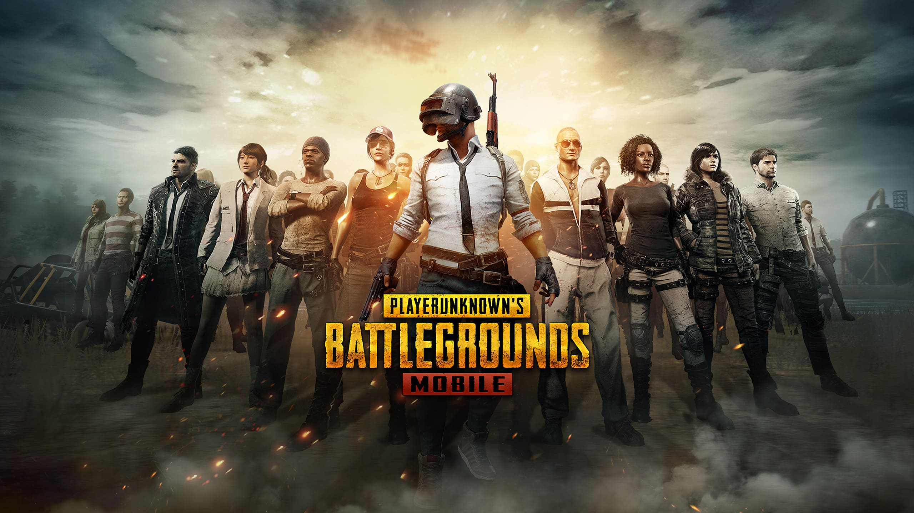

Vendas: +300 milhões de cópias
Receita: +US$ 3 bilhões
Ano: 2011
O jogo mais vendido da história, conhecido por sua liberdade criativa e mundo aberto infinito.

Vendas: +190 milhões de cópias
Receita: +US$ 8 bilhões
Ano: 2013
Um dos produtos de entretenimento mais lucrativos já feitos, impulsionado pelo modo online.

Vendas: +100 milhões (versão Game Boy)
Receita: bilhões ao longo das décadas
Ano: 1984
Um clássico atemporal que marcou gerações e popularizou os jogos portáteis.

Vendas: +82 milhões de cópias
Receita: incluso com o console Wii
Ano: 2006
Popularizou os controles de movimento e levou videogames para novos públicos.

Vendas: +75 milhões (PC/console)
Receita: +US$ 13 bilhões (incluindo mobile)
Ano: 2017
Um dos pioneiros do gênero Battle Royale moderno.

Vendas: +60 milhões de cópias
Receita: bilhões em vendas
Ano: 2017
Um dos jogos mais populares da Nintendo Switch, ideal para multiplayer.

Vendas: +57 milhões de cópias
Receita: +US$ 725 milhões no lançamento
Ano: 2018
Um dos jogos mais realistas já feitos, com narrativa cinematográfica.